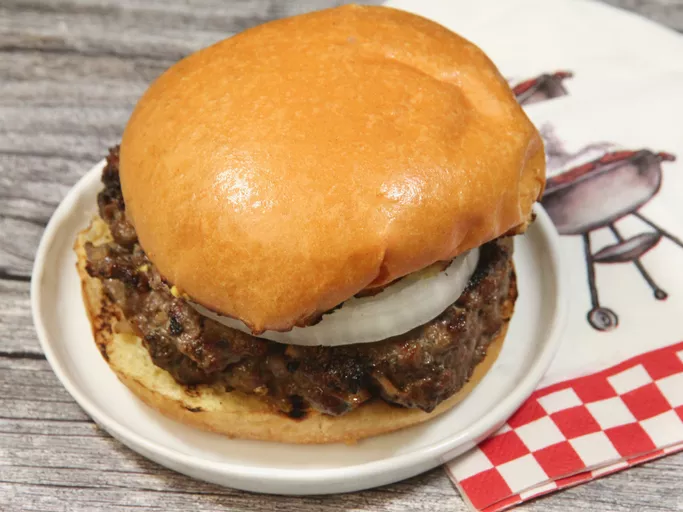

Hamburger

Description
The best burger recipe for summertime grilling! This juicy burger is jam-packed with all kinds of stuff and has no tasteless bread crumbs. Serve on buns with your favorite condiments.
This hamburger recipe is flavorful, juicy, and incredibly satisfying.
Ingredients
- 750g of ground beef
- half onion, finely chopped
- half cup of shredded cheese
- 1 egg
- 1 clove garlic
- 1 Teaspoons soy sauce
- Salt and pepper to taste
- 4 Briochi Hamburger Breads
Steps
- Preheat an outdoor grill for high heat and lightly oil the grate.
- Combine ground beef with onion, cheese, egg, minced garlic, soy sauce, salt and pepper in a large bowl. User your hands to form the mixture into 4 patties
- Cook Patties on the preheated grill until no longer pink in the center and the juices run clear, about 4 to 5 minutes per side. An instant-read thermometer inserted into the center should read atleast 54 Celsius
- Cut the 4 Breads into separate plates, and spread butter in each half. And quickly place the bread on top of the grill for 2 minutes at max as we want to lightly seal the bread
- Combine the Hamburger by adding the ingredients on top of each other in the following Order:
- Bread
- Patties
- Cheese
- Onion
- Sauce of your choice
- Bread